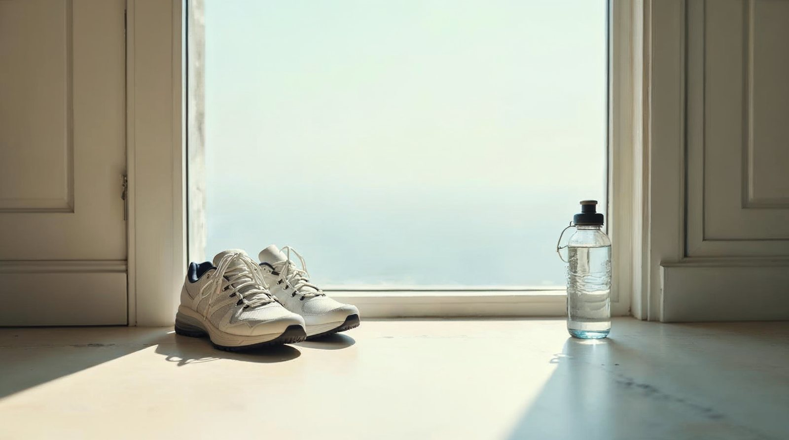
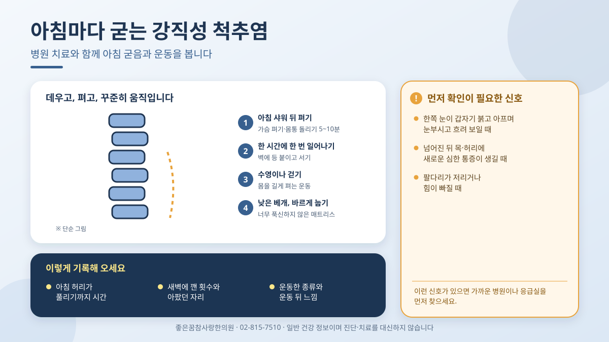

이종호 한의사 감수좋은꿈참사랑한의원 대표원장 (한의사 면허번호 19769)발행 2026-11-26 · 수정 2026-11-26
이 글의 차례
알람이 울려도 바로 몸을 일으키지 못합니다. 허리와 엉덩이가 돌처럼 굳어 있어서, 옆으로 돌아누워 한참을 꼼지락거린 뒤에야 겨우 일어납니다. 뜨거운 물로 샤워를 하고 출근길을 걷다 보면 점심 무렵엔 언제 그랬냐는 듯 풀립니다. 그런데 이런 아침이 몇 달째 이어지고, 쉬는 주말에 오히려 더 뻣뻣합니다.
강직성 척추염은 척추와 골반의 엉치 관절, 그리고 힘줄과 인대가 뼈에 붙는 자리에 오랫동안 염증이 생기는 병입니다. 염증이 오래 이어지면 척추 마디가 점점 굳어 움직임이 줄어들 수 있어 '강직성'이라는 이름이 붙었습니다. 주로 10대 후반에서 30대 사이에 시작되고, 남성에게 더 많이 보인다고 알려져 있습니다.
이 병은 처음에 흔한 허리 통증처럼 보여서 진단까지 시간이 오래 걸리는 경우가 많습니다. 진료실에서 "몇 년 동안 디스크인 줄 알고 지냈어요"라는 말씀을 종종 듣습니다. 젊은 나이에 허리가 늘 아프다 보니 운동 부족이나 자세 탓으로만 여기고 넘기셨던 것입니다.
진단과 약물 치료는 류마티스내과의 몫입니다. 최근에는 염증을 조절하는 여러 치료가 쓰이고 있어, 일찍 진단받고 꾸준히 치료를 이어 가는 것이 중요합니다. 저는 그 치료를 바탕으로, 굳는 몸을 매일 어떻게 풀어 주고 하루의 리듬을 어떻게 지킬지를 함께 살핍니다.
왜 척추에 염증이 생길까요
강직성 척추염은 우리 몸의 면역이 스스로의 관절과 힘줄 붙는 자리를 공격하면서 생기는 염증성 질환으로 이해합니다. 정확한 원인은 아직 다 밝혀지지 않았지만, 특정 유전 표지(HLA-B27)를 가진 분에게서 더 많이 생긴다고 알려져 있고, 가족 가운데 같은 병을 가진 분이 있는 경우도 있습니다.
염증은 대개 골반 뒤쪽의 엉치 관절에서 시작해 허리, 등, 목으로 올라가는 경우가 많습니다. 염증이 오래 이어지면 몸은 그 자리를 회복하려고 새 뼈를 만들고, 이것이 척추 마디 사이를 이어 붙이면서 움직임이 줄어들 수 있습니다. 그래서 염증을 조절하는 치료와 함께, 매일 몸을 움직여 유연함을 지키는 일이 중요합니다.
척추 말고도 엉덩이, 무릎, 발목 같은 큰 관절이 붓기도 하고, 발뒤꿈치나 아킬레스건, 갈비뼈와 가슴뼈가 만나는 자리가 아프기도 합니다. 눈이 붉고 아프며 빛에 눈부신 포도막염, 장의 염증, 건선 같은 피부 문제가 함께 오는 경우도 있어 몸 전체를 함께 봅니다.
한의학에서는 이렇게 아침에 굳고 움직이면 풀리며, 차고 습한 날 더 무거운 통증을 비증(痺證)의 범주에서 살펴 왔습니다. 기운과 혈의 흐름이 막혀 관절이 굳는다고 보았습니다. 그래서 저는 허리만 보지 않고 몸의 찬 정도, 피로와 잠, 소화까지 함께 여쭙습니다.
흔한 허리 통증과 어떻게 다를까요
강직성 척추염의 허리 통증은 '염증성 요통'이라는 특징을 보이는 경우가 많습니다. 대표적인 모양은 이렇습니다.
- 40세 이전, 특히 젊은 나이에 서서히 시작되어 석 달 넘게 이어지는 허리 통증
- 아침에 일어날 때 30분 넘게 허리가 굳어 있는 느낌
- 쉬면 오히려 더 굳고, 움직이고 운동하면 풀리는 통증
- 새벽에 허리가 아파 잠이 깨고, 일어나 움직이면 나아지는 모양
- 엉덩이 양쪽이 번갈아 가며 아픈 느낌
흔히 보는 기계적 요통은 반대인 경우가 많습니다. 많이 쓰고 난 저녁에 더 아프고, 쉬면 편해지며, 아침의 굳음은 몇 분 안에 풀립니다. 디스크는 숙이거나 오래 앉아 있을 때 심해지고 다리로 저림이 내려오는 경우가 많습니다.
물론 이 특징만으로 진단이 정해지지는 않습니다. 위의 모양이 여러 개 겹친다면 류마티스내과에서 혈액 검사와 골반 엑스레이, 필요하면 MRI로 확인해 보시길 권합니다. 일찍 확인할수록 치료를 시작하기가 수월합니다.
비슷해 보이지만 다르게 살펴야 하는 경우
여러 관절, 특히 손가락 마디가 양쪽으로 붓고 아침에 손이 오래 굳는다면 류마티스 관절염 쪽을 생각합니다. 강직성 척추염은 척추와 큰 관절, 힘줄 붙는 자리 위주라는 점이 다릅니다.
피부에 은백색 각질이 쌓이는 건선이 있으면서 관절이 붓는다면 건선성 관절염을, 장염이나 성병 뒤에 관절이 붓는다면 반응성 관절염을 함께 생각해 봅니다. 이들은 강직성 척추염과 한 가족처럼 묶어 보는 질환들입니다.
온몸이 쑤시고 피곤한데 검사는 정상이라면 섬유근육통을 생각해 보기도 합니다. 강직성 척추염이 있는 분에게 섬유근육통이 겹치기도 해서, 통증의 모양을 하나씩 나눠 보는 것이 중요합니다.
매일 몸을 움직이는 것이 치료의 한 축입니다
강직성 척추염에서 운동은 약만큼 중요하다고 이야기됩니다. 척추가 굳는 쪽으로 흐르는 힘을 매일 조금씩 거슬러 주는 일이기 때문입니다. 특히 가슴을 펴고, 허리를 뒤로 젖히고, 몸통을 돌리는 방향의 움직임을 꾸준히 이어 가는 것이 좋습니다.
아침에 일어나 뜨거운 샤워로 몸을 데운 뒤 가볍게 몸을 풀면 굳는 시간이 줄어든다는 분이 많습니다. 수영처럼 몸을 길게 펴고 숨을 크게 쉬게 되는 운동이 편하다는 분도 많고, 걷기와 자전거도 무난합니다.
반대로 오래 같은 자세로 있는 것은 굳음을 키웁니다. 책상에서 일하시는 분은 한 시간에 한 번 일어나 허리를 펴고, 등을 벽에 대고 서서 뒤통수와 등, 엉덩이를 붙여 보는 연습을 해 보세요. 숨을 크게 들이쉬며 가슴을 펴는 것도 갈비뼈 주변이 굳지 않게 돕습니다.
일과 생활 속에서 함께 챙길 것
젊은 나이에 시작되는 병이다 보니, 학업과 일, 육아가 한창인 시기와 겹치는 경우가 많습니다. 아침마다 몸이 굳어 출근 준비가 더딘데 그 사정을 주변에 설명하기도 어렵습니다. 그래서 아침 시간을 조금 넉넉히 잡고, 몸을 푸는 시간을 하루 일정에 아예 넣어 두시길 권합니다.
운전을 오래 하시는 분은 목과 등이 굳어 고개를 돌리기 어려워질 수 있습니다. 거울을 넓게 맞추고, 장거리 운전 때는 한두 시간마다 차에서 내려 몸을 펴 주세요. 책상에서 일하시는 분은 모니터를 눈높이로 올려 고개가 앞으로 빠지지 않도록 하는 것이 좋습니다.
날씨도 몸에 영향을 줍니다. 차고 습한 날, 일교차가 큰 환절기에 유난히 굳는다고 말씀하시는 분이 많습니다. 이런 날은 몸을 따뜻하게 감싸고, 아침 운동 시간을 조금 더 길게 가져가 보세요.
피로와 감기 같은 작은 일이 쌓인 뒤 통증이 커졌다는 분도 계십니다. 바쁜 주간이 지나고 나서 몸이 무거워진다면, 그 주의 잠과 식사가 어땠는지를 함께 돌아보는 것이 다음을 준비하는 데 도움이 됩니다.
먼저 이렇게 여쭙니다
결과지를 함께 보면서, 저는 대략 이런 순서로 여쭙니다.
- 허리 통증은 몇 살 무렵 시작되었고, 진단은 언제 받으셨나요?
- 아침에 일어나서 허리가 풀리기까지 대략 몇 분이 걸리나요?
- 새벽에 허리가 아파 깨는 날이 있나요? 깨면 일어나 움직이시나요?
- 엉덩이, 무릎, 발목, 발뒤꿈치, 가슴 앞쪽에도 아픈 곳이 있나요?
- 눈이 붉고 아팠던 적, 장이 자주 탈 나거나 피부에 각질이 생긴 적이 있나요?
- 지금 받고 계신 치료와 약, 주사는 무엇인가요?
다 기억하지 못하셔도 괜찮습니다. 류마티스내과 결과지와 약 이름만 챙겨 오셔도 이야기를 시작하기에 충분합니다.
일상에서 먼저 해 볼 수 있는 것
강직성 척추염과 함께 지내는 일상은 '굳기 전에 움직이기'로 정리할 수 있습니다. 치료는 류마티스내과 안내를 따르시고, 그 위에서 아래 습관을 들여 보세요.
- 아침에 따뜻한 샤워로 몸을 데운 뒤 5~10분 가슴 펴기와 허리 젖히기, 몸통 돌리기
- 낮에는 한 시간에 한 번 일어나 허리를 펴고, 벽에 등 붙이고 서기
- 일주일에 여러 번, 수영이나 걷기처럼 몸을 길게 펴는 운동을 꾸준히
- 잠은 너무 푹신하지 않은 매트리스에서, 베개는 낮게 하고 가능하면 바르게 눕기
- 담배는 척추의 굳음과 폐 기능에 부담을 준다고 알려져 있으니 줄이고 끊기
- 염증이 심한 시기에는 운동 강도를 낮추되 아주 멈추지는 않기
굳는 몸은 마음도 함께 지치게 합니다. 아침마다 몸과 씨름하다 보면 하루를 시작하기도 전에 기운이 빠지고, 오래 이어지는 병이라는 사실이 무겁게 다가옵니다. 함께 운동할 사람을 찾거나, 같은 병을 가진 분들의 모임에서 이야기를 나누는 것이 힘이 된다는 분도 계십니다.
잠도 함께 봅니다. 새벽 통증으로 자주 깨면 낮의 피로가 커지고, 피로는 다시 통증을 크게 느끼게 합니다. 잠자리에 드는 시각을 일정하게 맞추고, 저녁에 따뜻한 물로 몸을 풀어 주는 것이 도움이 된다는 분이 많습니다.
한의원에서 함께 살필 수 있는 경우
- 류마티스내과 치료를 받고 있지만 아침의 굳음과 허리, 엉덩이 뻐근함이 남아 있는 경우
- 등과 어깨, 엉덩이 근육이 늘 단단하게 뭉쳐 있어 운동을 시작하기 어려운 경우
- 새벽 통증으로 잠을 설치고 낮의 피로가 큰 경우
- 차고 습한 날이나 피곤한 날에 유난히 몸이 무거워지는 경우
좋은꿈참사랑한의원에 처음 오시면 먼저 아래 '먼저 확인이 필요한' 신호가 없는지부터 봅니다. 그다음 맥을 짚고, 척추의 움직임과 숨쉴 때 가슴의 움직임, 엉덩이와 발뒤꿈치처럼 힘줄이 붙는 자리를 확인합니다. 필요하면 초음파로 힘줄 주변을 함께 살펴봅니다.
그 뒤 진찰한 내용과 류마티스내과 치료 계획을 바탕으로 침, 약침, 온열 장비를 이용한 관리, 한약 상담 가운데 지금 상태에 맞는 것을 정합니다. 척추가 이미 굳은 마디가 있는 경우에는 강한 힘을 주는 추나는 하지 않고, 주변 근육의 긴장을 살피는 쪽으로 범위를 정합니다. 한약을 상의할 때는 드시는 약과 주사를 모두 확인하고 신중하게 정합니다.
류마티스내과 진료와 약은 그대로 이어 가시는 것을 기본으로 합니다.
다시 오시면 지난번 정한 것 하나가 실제로 어땠는지부터 이어서 듣습니다. 아침 운동을 해 보셨다면 굳는 시간이 어떻게 달라졌는지, 잠자리 시각을 맞춰 보셨다면 새벽에 깬 횟수가 어땠는지를 여쭙습니다.
이렇게 기록해 오시면 상담이 쉬워집니다
강직성 척추염은 좋은 시기와 힘든 시기가 번갈아 오는 경우가 많습니다. 2주 정도만 짧게 적어 보세요.
- 류마티스내과 결과지와 드시는 약, 맞으시는 주사
- 아침에 일어나 허리가 풀리기까지 걸린 시간
- 새벽에 깬 횟수와 그때 아팠던 자리
- 운동한 종류와 시간, 운동 뒤 몸의 느낌
- 허리 말고 아팠던 관절이나 발뒤꿈치, 눈과 장의 상태
빠진 날이 있어도 괜찮습니다. 굳는 시간이 유난히 길었던 날 전후로 무엇이 있었는지부터 함께 들여다보겠습니다.

굳는 몸과 오래 함께 지내려면
강직성 척추염은 오래 함께 가는 병입니다. 그만큼 하루의 작은 습관이 쌓여 몇 년 뒤의 몸을 만듭니다. 꾸준한 치료와 매일의 움직임이 함께할 때, 많은 분들이 일하고 운동하며 자기 생활을 이어 가십니다.
진단을 받기까지 오래 헤매신 분일수록, 이름을 알게 된 뒤 오히려 마음이 놓였다고 하십니다. 왜 아픈지 모르는 시간이 가장 힘들었다는 것입니다. 이제는 이유를 알았으니, 그 이유에 맞춰 하루를 조금씩 다시 짜 보면 됩니다.
이번 주에는 하나만 골라 보세요. 아침 샤워 뒤 5분 가슴 펴기, 한 시간마다 일어나 허리 펴기, 일주일에 두 번 수영이나 걷기. 다음에 오시면 그 하나가 아침의 굳음에 어떻게 닿았는지부터 여쭙겠습니다.
이런 증상은 먼저 확인이 필요합니다
- 한쪽 눈이 갑자기 붉고 아프며 빛에 눈이 부시고 흐려 보이는 경우
- 넘어지거나 부딪친 뒤 목이나 허리에 새로운 심한 통증이 생기고 팔다리가 저리거나 힘이 빠지는 경우
이런 신호가 있으면 한의원보다 가까운 병원이나 응급실을 먼저 찾으세요.
함께 읽으면 좋은 글
- 아침에 일어나면 허리가 뻣뻣한 것은 왜 그런가요?
- 류마티스 등 자가면역질환으로 치료 중일 때 근육통 한방 진료를 같이 받아도 되나요?
- 허리 디스크 초기 신호와 다리 저림은 어떻게 구분하나요?
- 한파가 오면 무릎과 손가락 관절이 시리고 뻣뻣한 것은 왜 그런가요?
- 한의원 가기 전에 복용 약 목록은 어떻게 정리하면 좋나요?

여쭙는 것
- 허리 통증은 몇 살 무렵 시작되었고, 진단은 언제 받으셨나요?
- 아침에 일어나서 허리가 풀리기까지 대략 몇 분이 걸리나요?
- 새벽에 허리가 아파 깨는 날이 있나요? 깨면 일어나 움직이시나요?
생활에서 해 볼 것
- 아침에 따뜻한 샤워로 몸을 데운 뒤 5~10분 가슴 펴기와 허리 젖히기, 몸통 돌리기
- 낮에는 한 시간에 한 번 일어나 허리를 펴고, 벽에 등 붙이고 서기
- 일주일에 여러 번, 수영이나 걷기처럼 몸을 길게 펴는 운동을 꾸준히
한의원에서 함께 살필 것
- 류마티스내과 치료를 받고 있지만 아침의 굳음과 허리, 엉덩이 뻐근함이 남아 있는 경우
- 등과 어깨, 엉덩이 근육이 늘 단단하게 뭉쳐 있어 운동을 시작하기 어려운 경우
- 새벽 통증으로 잠을 설치고 낮의 피로가 큰 경우
먼저 확인이 필요한 신호
- 한쪽 눈이 갑자기 붉고 아프며 빛에 눈이 부시고 흐려 보이는 경우
- 넘어지거나 부딪친 뒤 목이나 허리에 새로운 심한 통증이 생기고 팔다리가 저리거나 힘…
한눈에 보는 표
| 구분 | 핵심 |
|---|---|
| 여쭙는 것 | 허리 통증은 몇 살 무렵 시작되었고, 진단은 언제 받으셨나요? 아침에 일어나서 허리가 풀리기까지 대략 몇 분이 걸리나요? |
| 생활에서 해 볼 것 | 아침에 따뜻한 샤워로 몸을 데운 뒤 5~10분 가슴 펴기와 허리 젖히기, 몸통 돌리기 낮에는 한 시간에 한 번 일어나 허리를 펴고, 벽에 등 붙이고 서기 |
| 한의원에서 함께 살필 것 | 류마티스내과 치료를 받고 있지만 아침의 굳음과 허리, 엉덩이 뻐근함이 남아 있는 경우 등과 어깨, 엉덩이 근육이 늘 단단하게 뭉쳐 있어 운동을 시작하기 어려운 경우 |
| 먼저 확인이 필요한 신호 | 한쪽 눈이 갑자기 붉고 아프며 빛에 눈이 부시고 흐려 보이는 경우 넘어지거나 부딪친 뒤 목이나 허리에 새로운 심한 통증이 생기고 팔다리가 저리거나 힘이 빠지는 경우 |
자주 묻는 질문
강직성 척추염이면 척추가 모두 굳어 버리나요?
진행 정도는 사람마다 많이 다르고, 굳는 마디 없이 오래 지내는 분도 많습니다. 일찍 진단받아 염증 치료를 꾸준히 이어 가고 매일 몸을 움직이는 것이 척추의 움직임을 지키는 데 중요합니다.
통증이 있는데 운동을 해도 되나요?
강직성 척추염은 쉬면 더 굳고 움직이면 풀리는 경우가 많아, 운동이 치료의 한 축으로 권해집니다. 염증이 심한 시기에는 강도를 낮추고, 운동의 종류는 류마티스내과 안내와 몸 상태에 맞춰 정하세요.
류마티스내과 약을 쓰고 있는데 한의원 진료를 같이 받아도 되나요?
드시는 약과 맞으시는 주사를 모두 알려 주시면 그에 맞춰 진료 방향을 정합니다. 처방받은 치료는 의사와 상의 없이 멈추지 않으시길 권합니다.
추나를 받아도 되나요?
척추 마디가 이미 굳어 있거나 뼈가 약해진 경우에는 강한 힘을 주는 추나는 하지 않습니다. 진찰과 결과지를 보고 할지 말지, 한다면 어느 범위까지 할지 정합니다.
가족에게도 생길 수 있나요?
가족 가운데 같은 병을 가진 분이 있으면 생길 가능성이 조금 높다고 알려져 있습니다. 가족이 젊은 나이에 아침마다 허리가 오래 굳는다면 류마티스내과에서 확인해 보시길 권합니다.
좋은꿈참사랑한의원은 재진 때 지난번 이야기부터 이어서 여쭙니다. 진료시간과 예약은 오시는 길에서 확인하세요.
어디서 상담받을 수 있나요?
좋은꿈참사랑한의원은 서울 동작구 만양로2길 2 신성빌딩 3층·5층(서울 동작구 상도동, 7호선 상도역 3번 출구 근처)에 있습니다. 한의사 3명(이종호 대표원장, 조영기 수석진료원장, 정원영 진료원장)이 진료합니다. 진료시간은 평일 09:30~20:00(점심 13:00~14:00), 토·일·공휴일 09:30~15:00이며, 방문 전 전화로 확인을 권합니다. 예약은 네이버 예약, 카카오톡 상담, 전화 02-815-7510로 받습니다.
이 글은 일반적인 건강 정보이며 개인의 진단이나 치료를 대신하지 않습니다. 증상이 있거나 복용 중인 약이 있다면 진료를 통해 확인하세요. 치료 효과는 개인마다 다를 수 있습니다.
작성 기준: 일반적으로 알려져 있는 건강 정보를 참고해 정리했습니다(대표원장 감수). 증상 기록은 1~2주 동안 하루 1회, 비슷한 시간에 적어 오시면 지난 상태와 비교하기 쉽습니다.